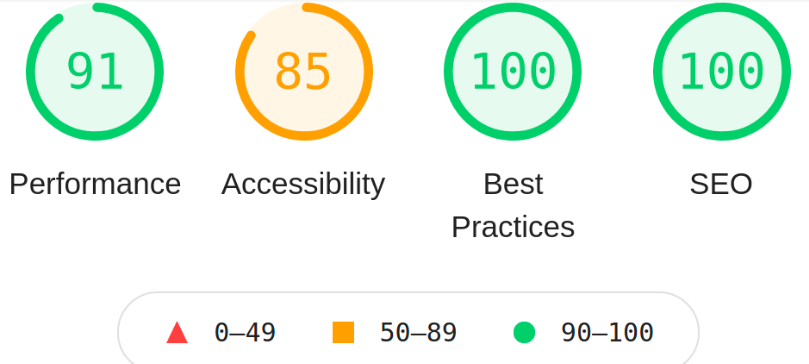

Akademia Promyk
About
Akademia Promyk is Polish kindergarten. I created a website which main focus was design matching the theme of the website and good advertisment and showing good sides of the object. To maximalize advertising potential I had to focus on good SEO (I aimed for 100/100 in Google Lighthouse audit). Important requirement of this website is possibility to edit content by non-technical person with simple use of CMS. One of the most important upsides of this kindergarten is colorful garden and the second one are really interesting activities - to show this impressive aspects interactive gallery is nessecary.

Technologies
I decided to use GatsbyJS because of its impressive SEO potential and good optimization of images. To manage content of the website I used DatoCMS combining with GitHub Actions to trigger build website on the server.
DatoCMS
Website is gonna be administrated by non-technical person so I decided to use DatoCMS to manage content of the webiste. There was to reasons I decided to go with this solution:
- It's free
- It's often used with GatsbyJS, so there is plenty of documentation
So the base integration with netlify hosting was quite easy to configure.
I have started to have some problems while trying to configure automatic deploy on my shared web server hosting (mydevil.net).
The only possible solution that came up to my mind was using Github Actions - which I have never used before.
Lighthouse results

The image shows that the goal result of 100/100 SEO points
in Google Lighthouse audit could be easly achived by using GatsbyJS.
Another conclusions from Lighthouse audit are that there is still room to improve performance and accessability.
What's next?
Project is pretty much finished and waiting to be deployed on realease date.
The website is hosted on netlify at this moment and not used in production.
Altough will be realeased in next academic year - September 2021
You can see project live here: Link